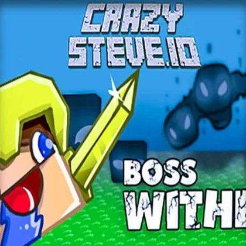
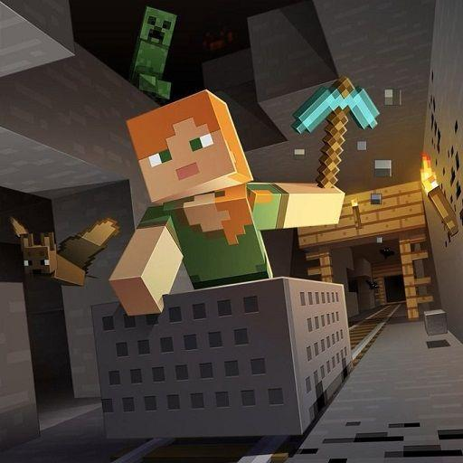
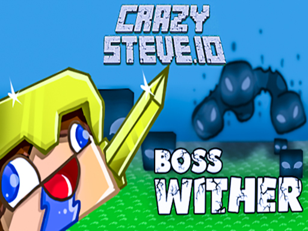
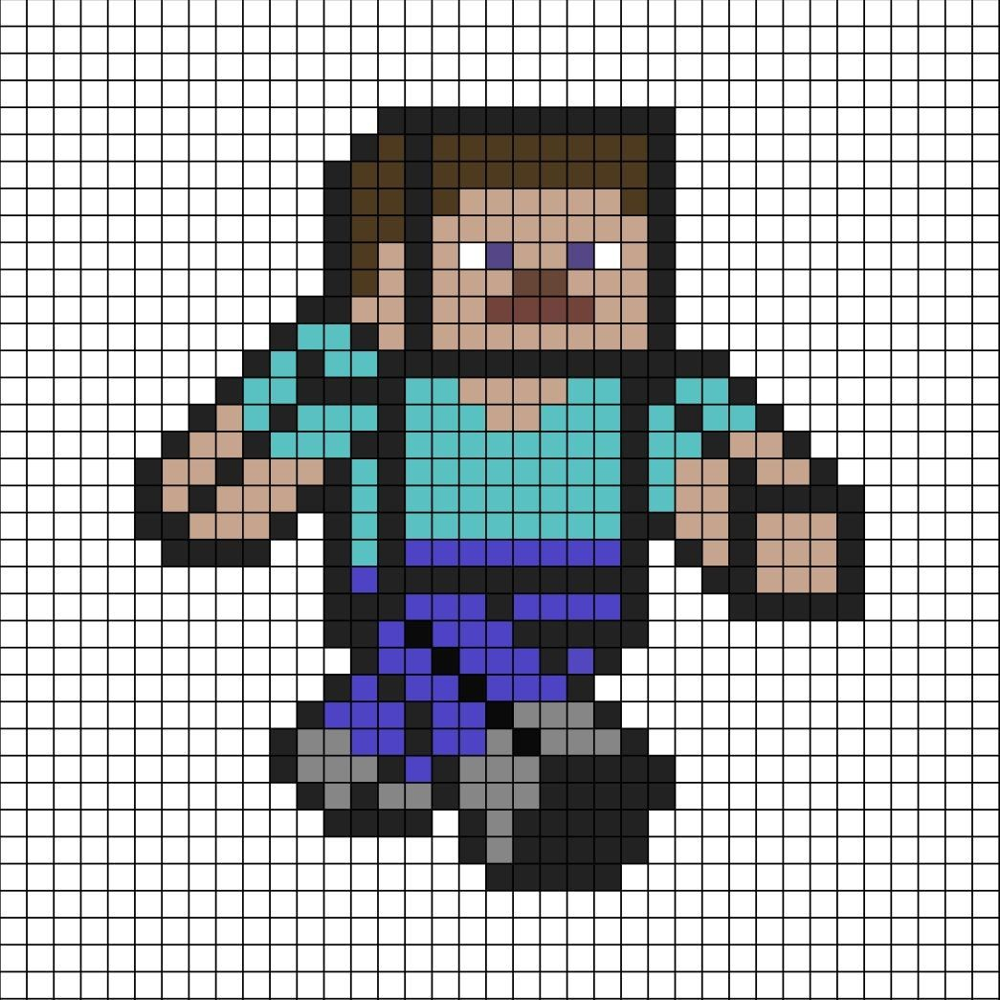
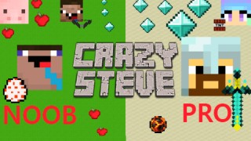

CrazySteve.io is what happens when you cross Minecraft with a battle royale. You place blocks, build structures on the fly, and fight other players in an ever-shrinking arena. The building mechanic adds a whole new dimension to .io combat—you're not just aiming and shooting, you're thinking in three dimensions while under pressure. I've had matches where I built elaborate towers only to get sniped from behind. Fun times.
🎯 Game Basics

The Arena
The map shrinks over time, forcing players into increasingly tight spaces. The safe zone gets smaller, and standing outside it deals damage. This shrinking mechanic creates natural chokepoints and combat opportunities.
Block Placement
You have limited block inventory. Place blocks strategically to create cover, build towers for sniper positions, or trap opponents. Resource management is crucial—you can't build indefinitely.
Combat
First-person shooting with ranged weapons. Aim, fire, and try to hit opponents before they hit you. Building cover while exchanging fire adds tactical depth.
🧱 Building Mechanics

Block Types
Different blocks have different properties. Standard blocks provide cover. Some block types might have special properties depending on the server settings.
- Wood blocks - Basic cover, breaks after taking damage
- Stone blocks - More durable than wood
- Metal blocks - Highest durability, rare finds
Placement Controls
Aim at surfaces and click to place blocks. You can build floors, walls, towers—whatever your strategy requires. Building speed matters during combat.
Strategic Building
Quick builds save lives. A well-placed wall blocks incoming fire. A hastily built tower might give you a height advantage. Practice placement speed to stay competitive.
You can't build forever. Watch your block count during fights. Empty reserves mid-combat leaves you defenseless. Only build what you actually need.
Building Speed Fundamentals
Quick placement separates good players from great ones. Every millisecond counts during firefights. Practice placing blocks in common scenarios until the action becomes automatic. Speed builds with consistent play.
Material Management
Materials spawn throughout the map in varying quantities. Smart players grab materials continuously rather than running dry mid-combat. Prioritize high-tier blocks while collecting lower-tier ones opportunistically.
⚔️ Combat Strategies
1. Height Advantage
Building upward gives you a vantage point. Spot enemies easier, shoot down at them, and gain psychological advantage. But tall structures also make you visible.
2. Defensive Cover
When taking fire, immediately build cover. A wall between you and enemies buys reaction time. Use the cover to heal, reposition, or plan counterattack.
3. Aggressive Building
Build toward opponents to close distance. Force them into uncomfortable engagement ranges. Rushing someone with instant walls protects your approach.
4. Tunneling
Build tunnels for safe movement between areas. Tunnels provide cover from snipers and allow repositioning without exposure. High-risk zones become accessible.
5. Ramp Building
Diagonal blocks let you build ramps for quick elevation changes. Ramps are faster than staircases and harder for enemies to shoot through. Master ramp placement for mobile building.
6. Defensive Structures
Build walls and floors to create defensive positions. Layered walls slow enemy advances while you deal damage. Even simple structures provide tactical advantages.
7. Resource Prioritization
Not all blocks are equal. Prioritize durable blocks for critical positions. Use weaker blocks for temporary structures. Resource management separates good builders from great ones.
8. High Ground Tactics
Elevated positions provide clear sightlines and psychological pressure. Build towers in strategic locations, but don't stay exposed too long. Height advantage disappears if enemies know where you are.

💎 Pro Tips
Always watch the zone. The shrinking safe area is predictable. Position yourself near its edge to have escape routes. Getting caught in the storm is brutal.
Practice quick-building. The faster you place blocks, the more competitive you'll be. In fast-paced fights, building speed matters as much as aim.
Scavenge efficiently. Materials spawn throughout the map. Prioritize high-value blocks over everything else. Durable blocks save more lives.
Stay mobile. Don't stay in built structures too long. Enemies will notice and converge. Keep moving, keep building, stay unpredictable.

❓ Frequently Asked Questions

How do I place blocks in CrazySteve.io?
Aim at surfaces and click to place blocks from your inventory. Different surfaces allow placement in different directions. Collect blocks by gathering resources around the map.
What's the best building strategy?
Adapt your building to the situation. Defensive players build cover. Aggressive players build toward enemies. Height builders create towers. Mix approaches based on circumstances.
How does the shrinking zone work?
The safe zone shrinks at regular intervals. Standing outside deals increasing damage over time. Always move toward the safe zone and position yourself near its edge.
Should I focus on building or shooting?
Both matter equally. Building without combat skills leaves you defenseless. Shooting without building limits your options. Practice both simultaneously.
What's the best way to survive early game?
Gather resources quickly and avoid unnecessary fights early. Build basic shelter and move with the zone. Late-game circles force combat anyway.
Can I play with friends?
Team modes allow coordinated play with friends. Building together and covering each other significantly improves survival chances.
📝 Related Games to Try
Love battle royale building? Check out Minecraft Classic for building mechanics, Surviv.io for survival action, or Zombs Royale for more battle royale mayhem.
📝 Conclusion
CrazySteve.io combines building creativity with battle royale intensity. Master both aspects and you'll outplay opponents consistently. Build smart, shoot straight, and respect the zone.
Start building and fighting! The arena awaits your constructions.
Last updated: January 20, 2024
Written by the iogameguide.com team